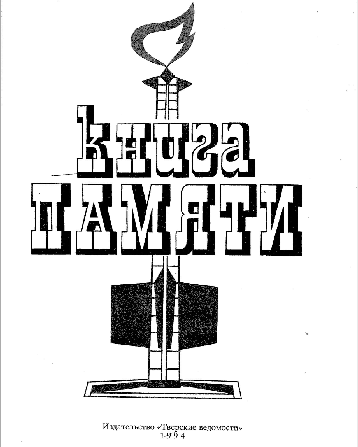

ЗЕМЛЯ ВОИНСКОЙ СЛАВЫ БЕЗ КНИГИ ПАМЯТИ?
В Тверской области в неполном объеме выполняются требования Федерального и областного законов «Об увековечении Памяти погибших при защите Отечества». В частности, не применяется такая форма увековечения Памяти как занесение фамилий погибших при защите Отечества и других сведений о них в Книги Памяти.
Последний, 11 дополнительный том Тверской Книги Памяти был издан в 2002 г. и с тех пор эта работа не проводится. Почему? Потому что в нашей области нет структуры, которая занималась бы этой работой.
В Фонд «Жить и Помнить» письма и звонки по вопросам связанным с КП поступают практически ежедневно. Жители области и других регионов России спрашивают: почему в Книге Памяти нет имени погибшего или пропавшего без вести родственника; почему в записи в Книге Памяти об их близком допущены ошибки, не указана точная дата гибели или место действительного захоронения погибшего; к кому можно обратиться, чтобы имя родственника было внесено в очередной том Книги Памяти или чтобы исправили некорректную запись. Точно такие же обращения поступают в муниципальные органы власти, районные отделы военного комиссариата Тверской области. Насколько нам известно, по вопросам, связанным с Книгой Памяти, обращаются и непосредственно к губернатору.
Несколько слов о печатном издании Книги Памяти Тверской области.
Книга создавалась в начале 90-х годов, без использования современных компьютерных технологий, без опыта такой масштабной работы. На основе всех имеющихся источников информации о погибших, умерших от ран и пропавших без вести в годы Великой Отечественной войны заполнялись карточки, с которых и начиналась предпечатная подготовка. Главные недостатки действующего 11-томного печатного издания Книги Памяти Тверской области на наш взгляд заключаются в следующем:
- в книги занесены имена далеко не всех наших земляков не вернувшихся с фронтов Великой Отечественной войны, и, прежде всего, тех, кто перед войной проходил действительную срочную службу или был призван накануне войны на так называемые «большие сборы»;
- в действующей Книге Памяти тысячи повторных записей, т.е. несколько записей об одном и том же человеке, что даже не позволяет посчитать количество погибших и пропавших без вести;
- многие тысячи погибших в плену записаны как пропавшие без вести;
- у большинства погибших указаны места первичного захоронения, указана не дата гибели или смерти, а месяц и год;
- по данным известных нам источников потери калининских партизан составили более пяти тыс. человек, в Книге Памяти нет и половины их имен.
Фонд «Жить и Помнить» рассматривает издание Книги Памяти Тверской области как составную часть исторического и социально – культурного развития региона.
Учитывая выше перечисленные обстоятельства, мы ходатайствуем о создании в области постоянно действующей Редакции Книги Памяти Тверской области, которая профессионально, обладая определенными полномочиями, будет заниматься увековечением Памяти наших погибших земляков. Принятие такого решения в год воинской славы Тверской земли, год 70-летия освобождения областного центра от немецко-фашистких оккупантов станет знаковым событием для наших ветеранов и тысяч семей, чьи погибшие родственники, павшие защитники Отечества остались только в их памяти и должным образом не увековечены.
Такие структуры постоянно работают вот уже на протяжении двух десятилетий в боевых и не боевых регионах России: Архангельской, Смоленской, Калужской, Калининградской, Тульской областях. Очень ценный опыт работы накоплен Редакцией Книги Памяти при правительстве Республики Татарстан.
Основными целями Редакции Книги Памяти могут быть:
- увековечение памяти погибших при защите Отечества,
- создание банка данных многотомной Книги Памяти Тверской области, на страницах которой увековечиваются имена наших земляков погибших при выполнении воинского долга, погибших и захороненных на территории области, а также выполнение заявок на поиск пропавших без вести защитников Отечества.
В качестве задач для достижения этих целей можно определить следующие:
- проведение поисковой работы по уточнению имен, мест захоронения, других данных об уроженцах Калининской области, которые погибли на фронтах Великой Отечественной войны, а также при выполнении служебного долга в послевоенный период;
- систематизация банка данных, сбор фотоматериалов, подготовка к печати и издание очередных томов Книги Памяти;
- организация шефской работы в советах ветеранов и семьях погибших;
- участие в создании и реконструкции музеев и комнат боевой славы;
- агитационно – пропагандистская деятельность в рамках увековечения Памяти павших защитников Отечества.
Программой деятельности Редакции может стать разработанная с ее участием региональная программа увековечения памяти погибших защитников Отечества.
Рассматриваем этот материал как прямое публичное обращение к Губернатору Тверской области и Законодательному Собранию Тверской области.
Президент Фонда «Жить и Помнить» Леонид Мусин
|